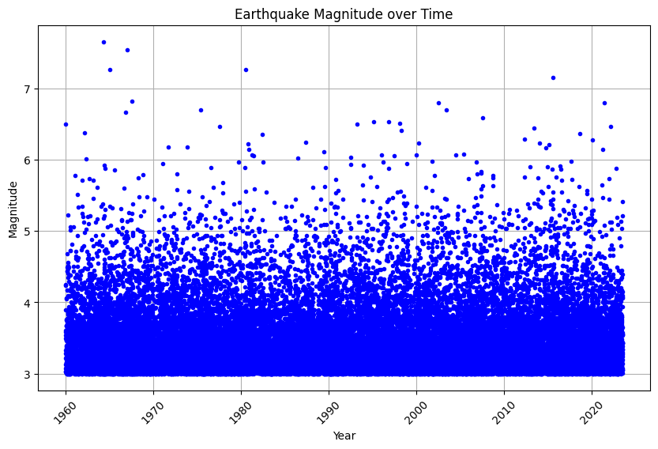
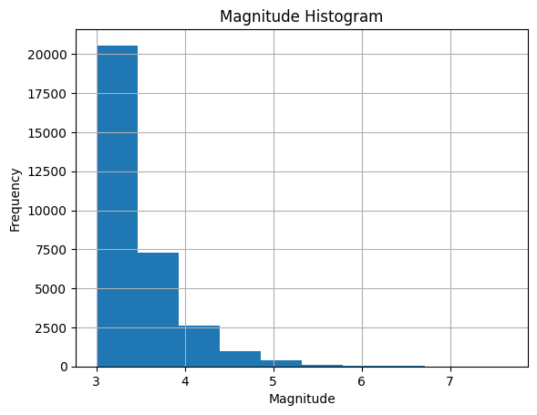

Earthquake Surrogate#
#Install Dependencies
!pip install pandas
Requirement already satisfied: pandas in c:\users\vishal\appdata\local\programs\python\python310\lib\site-packages (1.4.3)
Requirement already satisfied: python-dateutil>=2.8.1 in c:\users\vishal\appdata\local\programs\python\python310\lib\site-packages (from pandas) (2.8.2)
Requirement already satisfied: pytz>=2020.1 in c:\users\vishal\appdata\local\programs\python\python310\lib\site-packages (from pandas) (2022.1)
Requirement already satisfied: numpy>=1.21.0 in c:\users\vishal\appdata\local\programs\python\python310\lib\site-packages (from pandas) (1.23.1)
Requirement already satisfied: six>=1.5 in c:\users\vishal\appdata\local\programs\python\python310\lib\site-packages (from python-dateutil>=2.8.1->pandas) (1.16.0)
[notice] A new release of pip is available: 23.1.2 -> 23.2
[notice] To update, run: python.exe -m pip install --upgrade pip
!pip install matplotlib
Requirement already satisfied: matplotlib in c:\users\vishal\appdata\local\programs\python\python310\lib\site-packages (3.5.2)
Requirement already satisfied: cycler>=0.10 in c:\users\vishal\appdata\local\programs\python\python310\lib\site-packages (from matplotlib) (0.11.0)
Requirement already satisfied: fonttools>=4.22.0 in c:\users\vishal\appdata\local\programs\python\python310\lib\site-packages (from matplotlib) (4.34.4)
Requirement already satisfied: kiwisolver>=1.0.1 in c:\users\vishal\appdata\local\programs\python\python310\lib\site-packages (from matplotlib) (1.4.4)
Requirement already satisfied: numpy>=1.17 in c:\users\vishal\appdata\local\programs\python\python310\lib\site-packages (from matplotlib) (1.23.1)
Requirement already satisfied: packaging>=20.0 in c:\users\vishal\appdata\local\programs\python\python310\lib\site-packages (from matplotlib) (21.3)
Requirement already satisfied: pillow>=6.2.0 in c:\users\vishal\appdata\local\programs\python\python310\lib\site-packages (from matplotlib) (9.2.0)
Requirement already satisfied: pyparsing>=2.2.1 in c:\users\vishal\appdata\local\programs\python\python310\lib\site-packages (from matplotlib) (3.0.9)
Requirement already satisfied: python-dateutil>=2.7 in c:\users\vishal\appdata\local\programs\python\python310\lib\site-packages (from matplotlib) (2.8.2)
Requirement already satisfied: six>=1.5 in c:\users\vishal\appdata\local\programs\python\python310\lib\site-packages (from python-dateutil>=2.7->matplotlib) (1.16.0)
[notice] A new release of pip is available: 23.1.2 -> 23.2
[notice] To update, run: python.exe -m pip install --upgrade pip
#Import Libraries
import os
import torch
import torch.nn as nn
import pandas as pd
import matplotlib.pyplot as plt
#Import Dataset
from google.colab import files
uploaded = files.upload()
csv_file = "Formatted_ETAS_Output.csv"
# Read the CSV file using Pandas
df = pd.read_csv(csv_file, sep=',', lineterminator='\n')
# # Access the data in the DataFrame
---------------------------------------------------------------------------
ModuleNotFoundError Traceback (most recent call last)
Input In [4], in <cell line: 1>()
----> 1 from google.colab import files
2 uploaded = files.upload()
4 csv_file = "Formatted_ETAS_Output.csv"
ModuleNotFoundError: No module named 'google'
summary_stats = df.describe(include="all")
plt.figure(figsize=(10, 6))
plt.plot(df['Year'], df['Magnitude'], 'b.')
plt.xlabel('Year')
plt.ylabel('Magnitude')
plt.title('Earthquake Magnitude over Time')
plt.xticks(rotation=45)
plt.grid(True)
plt.show(block=True)
plt.hist(df['Magnitude'], bins=10)
plt.title('Magnitude Histogram')
plt.xlabel('Magnitude')
plt.ylabel('Frequency')
plt.grid(True)
plt.show()
plt.scatter(df['X'], df['Y'], c=df['Magnitude'], cmap='viridis', s=50) # Adjust the size (s) of the points as per your preference
plt.title('Earthquake Coordinates')
plt.xlabel('X')
plt.ylabel('Y')
cbar = plt.colorbar()
cbar.set_label('Magnitude')
plt.show()


new_df = df.copy()
# Convert "Date" column to datetime in the new DataFrame
new_df["Date"] = pd.to_datetime(new_df["Date"], errors="coerce", format="%m/%d/%y")
# Adjust two-digit year values to four-digit format in the new DataFrame
new_df.loc[new_df["Date"].dt.year > pd.Timestamp.now().year, "Date"] -= pd.DateOffset(years=100)
# Extract components from the "Date" column in the new DataFrame
new_df["Day"] = new_df["Date"].dt.day
new_df["Month"] = new_df["Date"].dt.month
new_df["Year"] = new_df["Date"].dt.year
new_df["DayOfWeek"] = new_df["Date"].dt.dayofweek
new_df["Quarter"] = new_df["Date"].dt.quarter
# Convert "Time" column to datetime in the new DataFrame
new_df["Time"] = pd.to_datetime(new_df["Time"], format="%H:%M:%S.%f")
# Extract time components in the new DataFrame
new_df["Hour"] = new_df["Time"].dt.hour
new_df["Minute"] = new_df["Time"].dt.minute
new_df["Second"] = new_df["Time"].dt.second
new_df["Millisecond"] = new_df["Time"].dt.microsecond // 1000
# Drop the original "Time" column from the new DataFrame
new_df = new_df.drop("Time", axis=1)
# Drop the "Date" column from the new DataFrame
new_df = new_df.drop("Date", axis=1)
new_df = new_df.drop("Year", axis=1)
new_df.head()
| X | Y | Magnitude | Z\r | Day | Month | DayOfWeek | Quarter | Hour | Minute | Second | Millisecond | |
|---|---|---|---|---|---|---|---|---|---|---|---|---|
| 0 | -119.0502 | 33.9790 | 6.50 | 8.2474 | 31 | 12 | 3 | 4 | 0 | 3 | 9 | 0 |
| 1 | -115.6222 | 33.0793 | 4.25 | 7.9322 | 2 | 1 | 5 | 1 | 0 | 8 | 49 | 0 |
| 2 | -115.6323 | 33.1220 | 3.03 | 8.4015 | 2 | 1 | 5 | 1 | 0 | 10 | 31 | 0 |
| 3 | -115.5851 | 33.0745 | 3.03 | 7.9678 | 2 | 1 | 5 | 1 | 0 | 10 | 32 | 0 |
| 4 | -115.6256 | 33.0290 | 3.08 | 7.9737 | 2 | 1 | 5 | 1 | 0 | 11 | 7 | 0 |
from sklearn.model_selection import train_test_split
from sklearn.preprocessing import StandardScaler
X = new_df.drop("Magnitude", axis=1) # Features
y = new_df["Magnitude"] # Target variable
# scaler = StandardScaler()
# X = scaler.fit_transform(X)
# Split the data into training and testing sets
X_train, X_test, y_train, y_test = train_test_split(X, y, test_size=0.3, random_state=42)
# scaler = StandardScaler()
# X_scaled_train = scaler.fit_transform(X_train)
# X_scaled_test = scaler.fit_transform(X_test)
print(X_train)
print(y_train)
print(X_test)
print(y_test)
X Y Z\r Day Month DayOfWeek Quarter Hour \
31932 -116.3290 31.9490 18.8422 19 5 4 2 9
31187 -118.1857 38.1148 4.7292 11 11 3 4 20
14148 -117.5088 35.7325 1.6788 19 7 1 3 13
23611 -116.2980 33.9380 18.8762 26 2 0 1 3
23500 -118.1278 34.5486 14.6323 12 12 1 4 22
... ... ... ... ... ... ... ... ...
29802 -114.2620 30.3950 8.9847 1 3 4 1 3
5390 -116.5115 33.9353 9.2916 14 7 1 3 12
860 -118.3985 33.4376 19.8147 19 11 6 4 21
15795 -116.0270 37.0100 18.5641 6 11 2 4 20
23654 -121.6790 37.3120 19.3746 1 4 6 2 5
Minute Second Millisecond
31932 9 15 0
31187 43 48 0
14148 12 14 0
23611 47 3 0
23500 47 34 0
... ... ... ...
29802 59 15 0
5390 53 12 0
860 14 56 0
15795 23 44 0
23654 59 47 0
[22400 rows x 11 columns]
31932 3.21
31187 4.40
14148 4.23
23611 3.07
23500 3.51
...
29802 3.24
5390 3.05
860 3.14
15795 3.29
23654 5.13
Name: Magnitude, Length: 22400, dtype: float64
X Y Z\r Day Month DayOfWeek Quarter Hour \
23100 -115.3318 32.3288 18.5062 11 2 5 1 2
17362 -117.6355 36.4900 10.4344 2 12 4 4 22
8993 -118.1554 38.2291 1.2431 6 10 3 4 18
19566 -120.0683 36.0333 3.4478 22 1 4 1 1
3798 -116.6385 33.7264 0.4860 8 6 3 2 10
... ... ... ... ... ... ... ... ...
1943 -121.1027 36.5578 4.7618 15 2 5 1 3
29579 -115.8174 32.8658 16.8723 9 9 6 3 16
5955 -119.9570 34.9426 13.0235 2 9 3 3 16
18112 -117.5888 35.6010 9.5120 30 4 1 2 7
13274 -117.8017 38.1782 9.5803 25 9 3 3 17
Minute Second Millisecond
23100 46 50 0
17362 6 22 0
8993 21 51 0
19566 29 16 0
3798 30 9 0
... ... ... ...
1943 4 7 0
29579 34 52 0
5955 7 1 0
18112 57 12 0
13274 37 48 0
[9601 rows x 11 columns]
23100 3.02
17362 3.26
8993 3.26
19566 3.00
3798 3.79
...
1943 3.26
29579 3.10
5955 3.92
18112 3.00
13274 3.60
Name: Magnitude, Length: 9601, dtype: float64
#XGB Regressor
import xgboost as xgb
xgb_model = xgb.XGBRegressor(objective="reg:squarederror", random_state=42)
xgb_model.fit(X_train, y_train)
XGBRegressor(base_score=None, booster=None, callbacks=None,
colsample_bylevel=None, colsample_bynode=None,
colsample_bytree=None, early_stopping_rounds=None,
enable_categorical=False, eval_metric=None, feature_types=None,
gamma=None, gpu_id=None, grow_policy=None, importance_type=None,
interaction_constraints=None, learning_rate=None, max_bin=None,
max_cat_threshold=None, max_cat_to_onehot=None,
max_delta_step=None, max_depth=None, max_leaves=None,
min_child_weight=None, missing=nan, monotone_constraints=None,
n_estimators=100, n_jobs=None, num_parallel_tree=None,
predictor=None, random_state=42, ...)In a Jupyter environment, please rerun this cell to show the HTML representation or trust the notebook. On GitHub, the HTML representation is unable to render, please try loading this page with nbviewer.org.
XGBRegressor(base_score=None, booster=None, callbacks=None,
colsample_bylevel=None, colsample_bynode=None,
colsample_bytree=None, early_stopping_rounds=None,
enable_categorical=False, eval_metric=None, feature_types=None,
gamma=None, gpu_id=None, grow_policy=None, importance_type=None,
interaction_constraints=None, learning_rate=None, max_bin=None,
max_cat_threshold=None, max_cat_to_onehot=None,
max_delta_step=None, max_depth=None, max_leaves=None,
min_child_weight=None, missing=nan, monotone_constraints=None,
n_estimators=100, n_jobs=None, num_parallel_tree=None,
predictor=None, random_state=42, ...)val_score = xgb_model.score(X_test, y_test)
print("XGB Regressor R^2:", val_score)
from sklearn.metrics import r2_score
from sklearn.metrics import mean_absolute_error
from sklearn.metrics import mean_squared_error
predicted = xgb_model.predict(X_test)
MAE = mean_absolute_error(y_test, predicted)
print("XGB Regressor MAE:", MAE)
mean_squared_score = mean_squared_error(y_test, predicted)
print("XGB Regressor MSE:", mean_squared_score)
XGB Regressor R^2: -0.07805805914027886
XGB Regressor MAE: 0.352417946920682
XGB Regressor MSE: 0.23101622626237914
#Support Vector Regression
from sklearn.svm import SVR
regr = SVR(C=1.0, epsilon=0.2)
regr.fit(X_train, y_train)
SVR(epsilon=0.2)In a Jupyter environment, please rerun this cell to show the HTML representation or trust the notebook.
On GitHub, the HTML representation is unable to render, please try loading this page with nbviewer.org.
SVR(epsilon=0.2)
r2 = regr.score(X_test, y_test)
print("SVR R^2:", r2)
from sklearn.metrics import mean_squared_error
from sklearn.metrics import mean_absolute_error
predicted = regr.predict(X_test)
MAE = mean_absolute_error(y_test, predicted)
print("SVR MAE:", MAE)
mean_squared_score = mean_squared_error(y_test, predicted)
print("SVR MSE:", mean_squared_score)
SVR R^2: -0.03676225623642626
SVR MAE: 0.32002706358927097
SVR MSE: 0.22216698065223922
#MLP Regressor
from sklearn.neural_network import MLPRegressor
smlp = MLPRegressor(hidden_layer_sizes=1000, activation='relu', solver='adam', batch_size=32, learning_rate='invscaling', max_iter=10000, alpha=0.0001).fit(X_train, y_train)
MLP_R2 = smlp.score(X_test, y_test)
print("MLP Regressor R^2:", MLP_R2)
from sklearn.metrics import mean_squared_error
predicted = smlp.predict(X_test)
MAE = mean_absolute_error(y_test, predicted)
print("MLP Regressor MAE:", MAE)
mean_squared_score = mean_squared_error(y_test, predicted)
print("MLP Regressor MSE:", mean_squared_score)
MLP Regressor R^2: -0.0183904806384525
MLP Regressor MAE: 0.35452631307729565
MLP Regressor MSE: 0.21823010709297308
#Linear Regression
from sklearn.linear_model import LinearRegression
clf_1 = LinearRegression().fit(X_train, y_train)
val_acc = clf_1.score(X_test, y_test)
print("Linear Regression R^2:", val_acc)
from sklearn.metrics import mean_squared_error
predicted = clf_1.predict(X_test)
MAE = mean_absolute_error(y_test, predicted)
print("Linear Regression MAE:", MAE)
mean_squared_score = mean_squared_error(y_test, predicted)
print("Linear Regression MSE", mean_squared_score)
Linear Regression R^2: -0.0007016649741236058
Linear Regression MAE: 0.3404332764766683
Linear Regression MSE 0.2144395844887611
#Random Forest
from sklearn.ensemble import RandomForestRegressor
clf_2 = RandomForestRegressor(max_depth=2, random_state=0).fit(X_train, y_train)
val_acc = clf_2.score(X_test, y_test)
print("Random Forest R^2:", val_acc)
from sklearn.metrics import mean_squared_error
predicted = clf_2.predict(X_test)
MAE = mean_absolute_error(y_test, predicted)
print("Random Forest MAE:", MAE)
mean_squared_score = mean_squared_error(y_test, predicted)
print("Random Forest MSE", mean_squared_score)
Random Forest R^2: -0.001417377347937565
Random Forest MAE: 0.34057573664300445
Random Forest MSE 0.21459295393884403